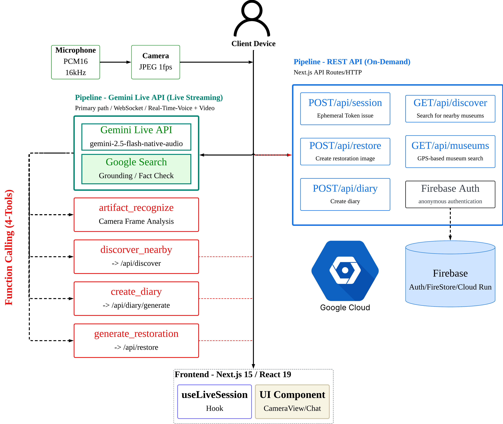
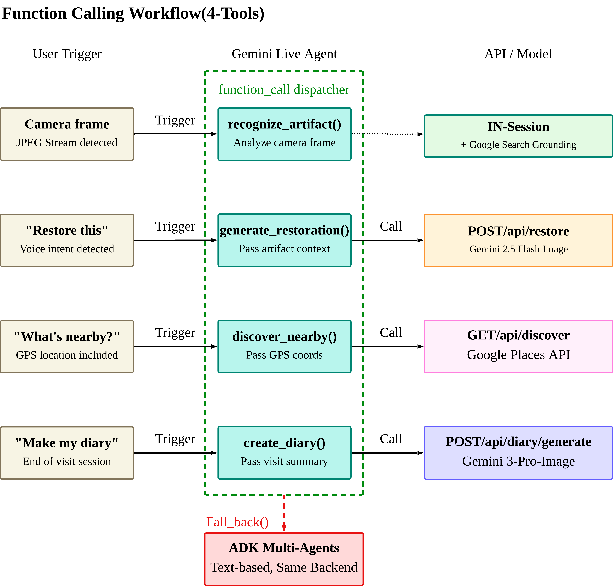
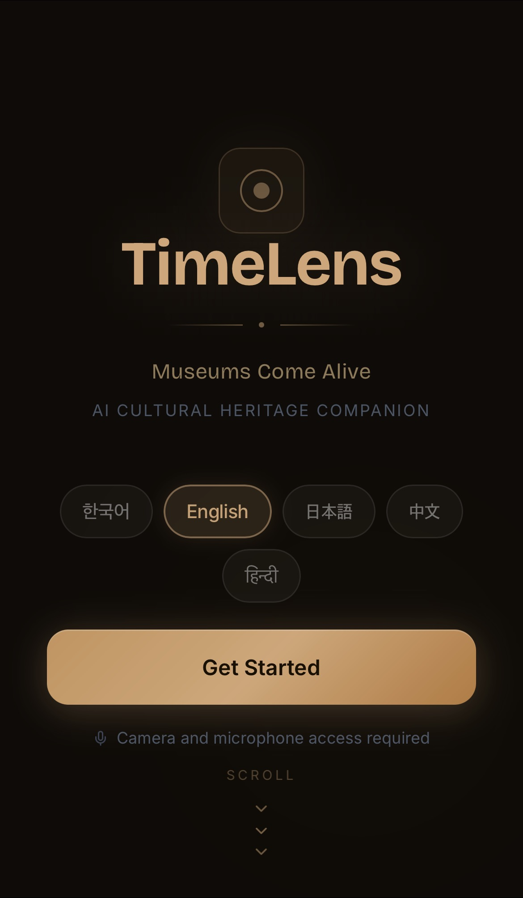
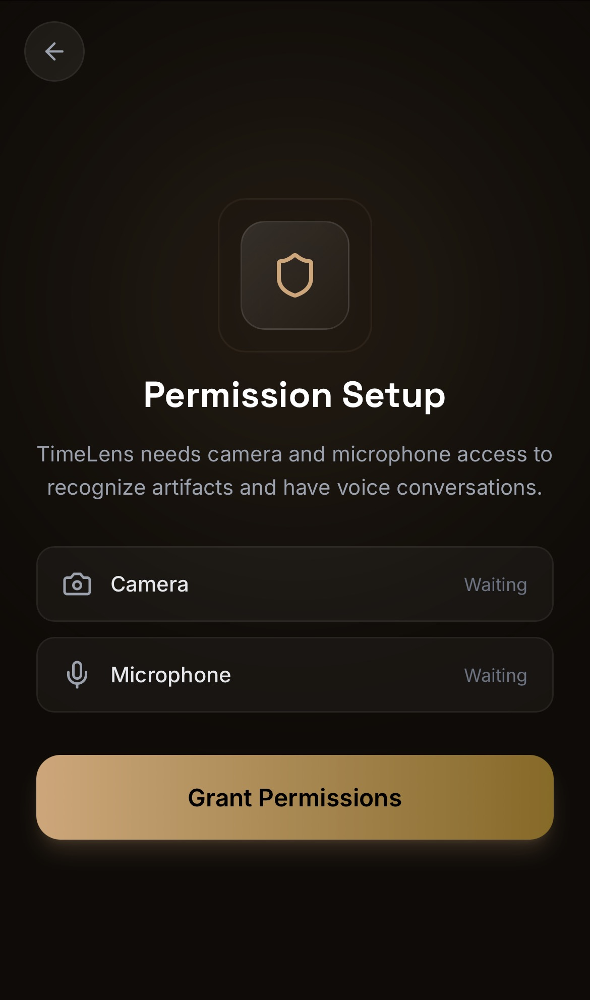
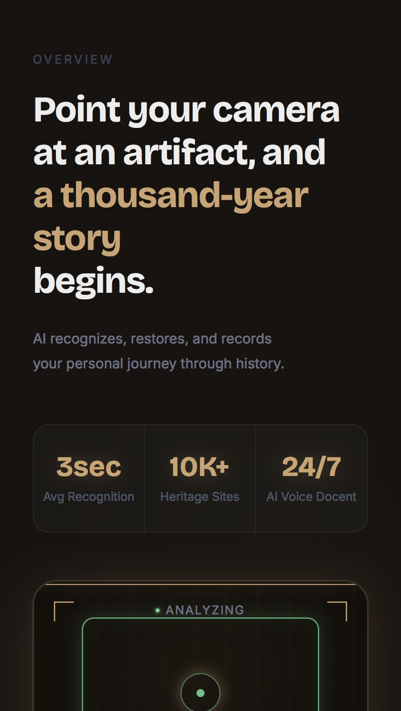
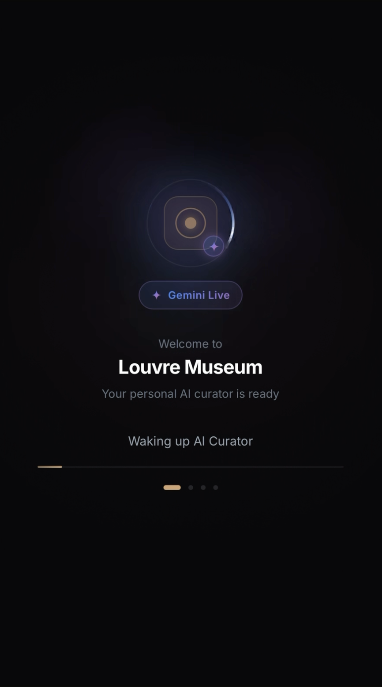
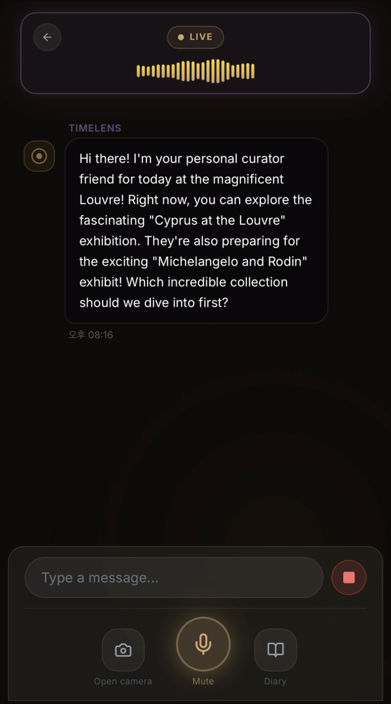
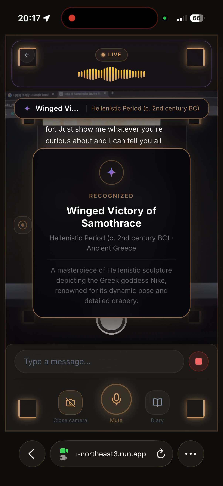
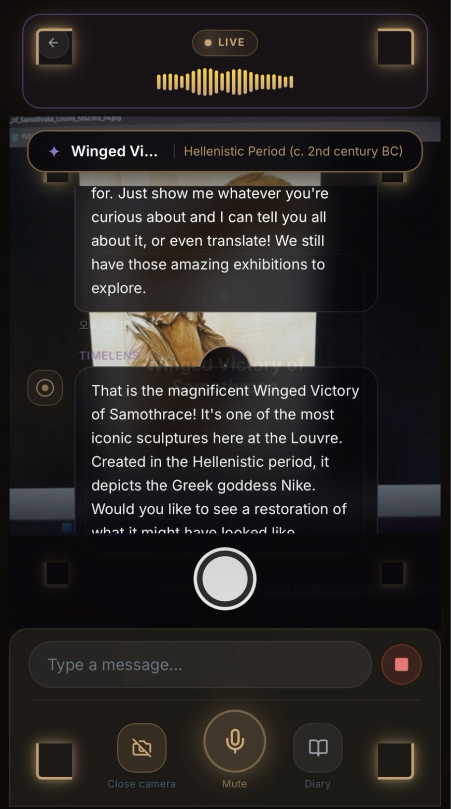
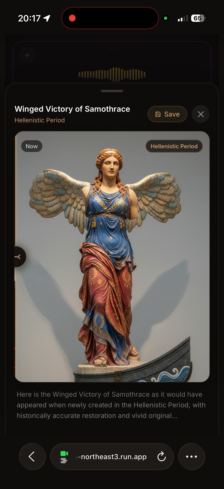

TimeLens - 음성+카메라 멀티모달 AI 박물관 큐레이터
Overview
Google Global 해커톤 — Gemini Live Agent Challenge 출품작
박물관 단체 관람의 불편함에서 출발한 AI 큐레이터 서비스. "나만의 속도로 보기 어렵고, 궁금한 것을 바로 물어볼 수 없다"는 문제를 해결합니다. 카메라로 유물을 비추고(See), AI 큐레이터의 설명을 듣고(Hear), 음성으로 질문하는(Speak) 흐름이 끊김 없이 이어지는 것이 핵심입니다.
주요 성과
- Google Global 해커톤 — Gemini Live Agent Challenge 출품
- Function Calling 4개로 오케스트레이션 대체 — 라우팅 로직·인텐트 분류기·상태 머신 전부 제거
- 듀얼 파이프라인 설계 — Gemini Live API(메인) + ADK 멀티 에이전트(텍스트 폴백)
- 에이전틱 카메라 음성 명령 — 15개 언어 정규식 패턴 지원
- 다국어 서비스 — 한·영·일·중·힌디어 5개 언어
데모 & 링크
- 데모 비디오: YouTube
- GitHub: wigtn/wigtn-timelens
- 개발기: 블로그 포스트
심사 기준 및 전략
심사 항목
- Innovation & Multimodal UX (40%) — 음성, 시각, 이미지의 자연스러운 통합
- Technical Implementation & Agent Architecture (30%) — Google Cloud 네이티브 구현
- Demo & Presentation (30%) — 실제 동작 화면 시연
보너스 포인트
- 개발 과정 공개 콘텐츠 발행: +0.6점
- CI/CD 자동화 배포: +0.2점
- Google Developer Group 멤버: +0.2점
Architecture — 듀얼 파이프라인
단일 경로(Live API)만이 아닌, 연결 불안정 환경(박물관 Wi-Fi) 대응을 위한 다중 경로 설계입니다.

Gemini Live API 파이프라인 (메인)
- 음성 입력(PCM16/16kHz) + 카메라(JPEG 1fps)를 동일 WebSocket 세션에서 실시간 처리
- Function Calling 4개로 오케스트레이션 대체 — 라우팅 로직, 인텐트 분류기, 상태 머신을 전부 제거했습니다
- barge-in 기능으로 AI 응답 중에도 자연스럽게 끊고 질문할 수 있습니다
ADK 멀티 에이전트 파이프라인 (텍스트 폴백)
- timelens_orchestrator → curator / restoration / discovery / diary 4개 Sub-Agent
- Live API와 동일한 백엔드 API를 공유하여 코드 중복을 제거했습니다
- 어느 경로로 진입하든 동일한 함수를 호출합니다 — 다른 건 진입점뿐입니다
Function Calling Workflow — 4개 도구
처음에는 인텐트 분류기, if/else 체인, 상태 머신을 계획했습니다. 최종적으로 시스템 프롬프트 + Function Declaration 4개만 남기고 나머지를 모델에 위임한 결과가 더 좋았습니다. "모델은 당신의 라우팅 로직보다 똑똑하다"가 핵심 인사이트입니다.

4가지 도구
- recognize_artifact() — 카메라 프레임 분석 + Google Search Grounding으로 유물 인식·정보 검색
- generate_restoration() — Gemini 2.5 Flash Image로 포토리얼리스틱 복원 이미지 생성
- discover_nearby() — GPS 기반 Google Places API로 주변 박물관·유적지 탐색
- create_diary() — 관람 세션 종료 시 Gemini 3 Pro Image로 방문 다이어리 자동 생성
에이전틱 카메라
사용자가 음성으로 촬영을 트리거하는 핵심 UX입니다. 15개 언어별 정규식 패턴(한국어: "이거 뭐야", "이거 봐" / 영어: "what is this", "look at this" / 일본어·중국어·힌디어 등)으로 음성 명령을 감지합니다.
촬영 프로세스
- 음성 명령 감지 → 500ms 안정화 대기 (손 떨림 방지)
- 고해상도 사진 촬영 → iOS 스타일 흰색 플래시 오버레이 (0.2초 페이드)
- Live API로 사용자 발화와 함께 전송 → AI 음성 피드백
Service Flow

랜딩 — 언어 선택
한국어·영어·일본어·중국어·힌디어 5개 언어 지원. "Museums Come Alive" — 카메라와 마이크 권한을 요청하고 세션을 시작합니다.

권한 설정
카메라와 마이크 접근 권한을 부여합니다. 권한이 없으면 텍스트 모드(ADK 폴백)로 자동 전환됩니다.

서비스 소개
"Point your camera at an artifact, and a thousand-year story begins." 평균 3초 인식, 10K+ 유적지, 24/7 AI Voice Docent.

세션 초기화
Gemini Live 세션 연결. GPS 기반으로 현재 위치의 박물관을 자동 감지하고, AI 큐레이터를 깨웁니다.

AI 큐레이터 인사
현재 전시 정보를 Google Search Grounding으로 실시간 검색하여 인사와 함께 전달합니다. 음성·텍스트 양방향 대화가 가능합니다.

유물 인식
"이거 뭐야?" — 에이전틱 카메라가 음성 명령을 감지하여 촬영 후 recognize_artifact()를 호출합니다. 유물의 이름, 시대, 역사적 배경을 설명합니다.

실시간 멀티모달 대화
LIVE 모드에서 카메라 프레임과 음성이 동시에 처리됩니다. 유물을 보면서 자유롭게 질문하고, barge-in으로 AI 응답을 끊고 새 질문도 가능합니다.

유물 복원 이미지
"원래 모습 보여줘" — generate_restoration()이 Gemini 2.5 Flash Image로 포토리얼리스틱 복원 이미지를 생성합니다. Now/원래 시대 토글로 비교할 수 있습니다.
개발 과정에서 해결한 문제들
한국어 STT 전사 품질
Gemini outputTranscription이 한국어를 잘못 처리하는 문제가 있었습니다("괜찮 ." → "괜찮.", "큐레 이터" → "큐레이터"). 후처리 함수로 구두점 앞 공백 제거, 잘못 분리된 한글 음절 병합, 시스템 프롬프트에서 문장당 단어 15개 이하로 제한하여 해결했습니다.
박물관 Wi-Fi 연결
Firebase createSession()이 느린 연결에서 무한정 멈추는 문제가 있었습니다. Promise.race에 5초 타임아웃 → 로컬 세션으로 폴백하여 해결했으며, 사용자는 전혀 인지하지 못합니다.
ADK와 Zod 버전 충돌
ADK 내부 zod/v3과 프로젝트 Zod v4가 충돌하는 문제가 있었습니다. @google/genai의 Schema 인터페이스를 직접 사용하여 해결했습니다.
Tech Stack — Google 생태계 활용
AI / ML
- Gemini 2.5 Flash — 메인 모델, Function Calling 기반 오케스트레이션
- Gemini 2.5 Flash Native Audio — 실시간 음성 처리
- Gemini 2.5 Flash Image — 유물 복원 이미지 생성
- Gemini 3 Pro Image — 방문 다이어리 생성
- Gemini Live API — 실시간 음성+카메라 멀티모달 WebSocket 세션
- Google ADK — 멀티 에이전트 텍스트 폴백 파이프라인
- Google Search Grounding — 실시간 유물 정보 검색
Frontend & Mobile
- Next.js 15, React 19 — 웹 클라이언트
- React Native (Expo SDK) — 모바일 클라이언트
- useLiveSession Hook — WebSocket 세션 관리
- CameraView & Chat UI Components
Infrastructure
- Google Cloud Run — 서버 배포
- Firebase Auth — 익명 인증 (5초 타임아웃 + 로컬 폴백)
- Firestore — 세션 데이터 저장
- Google Places API — 주변 박물관 탐색